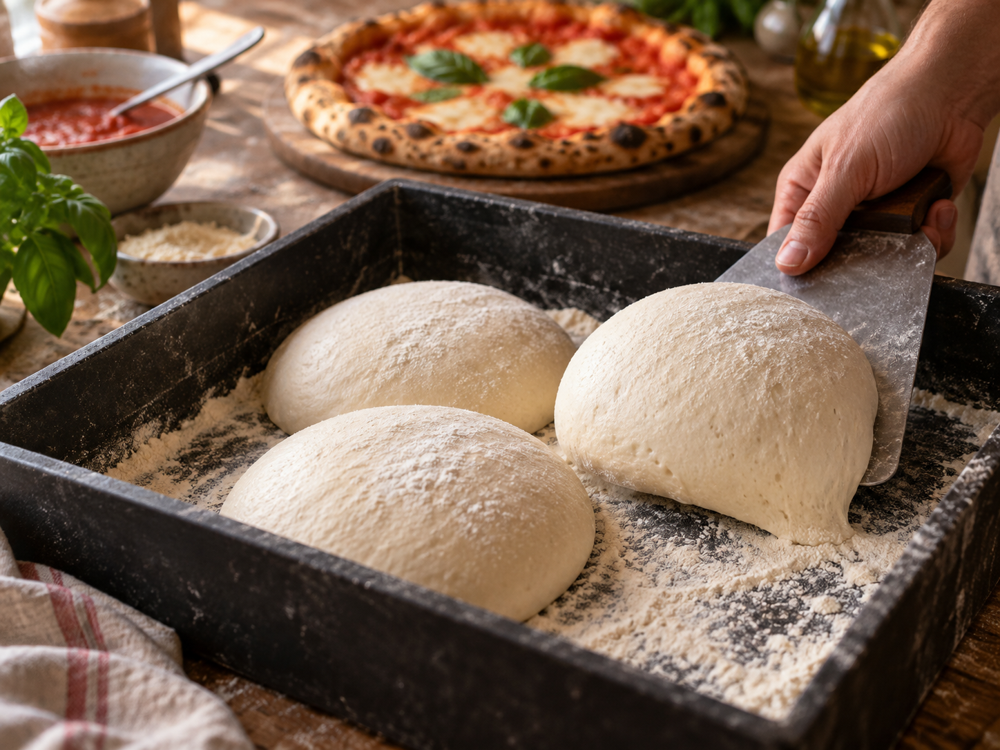
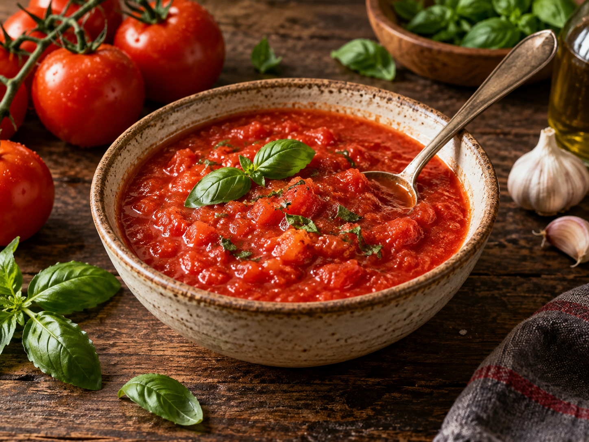
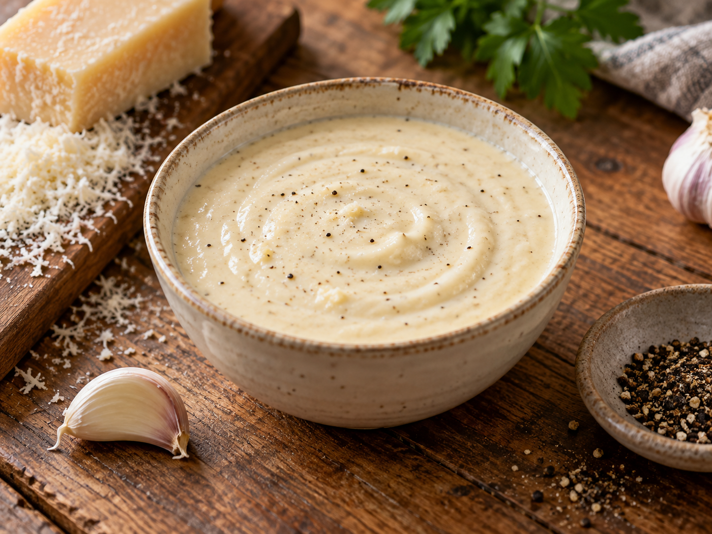
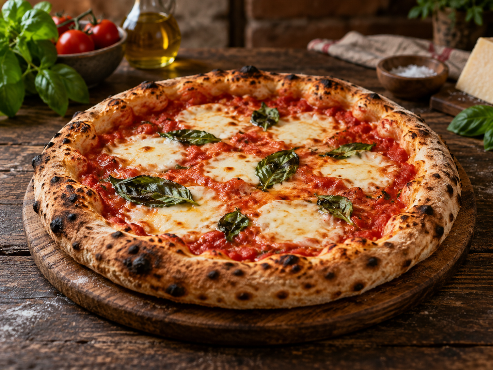
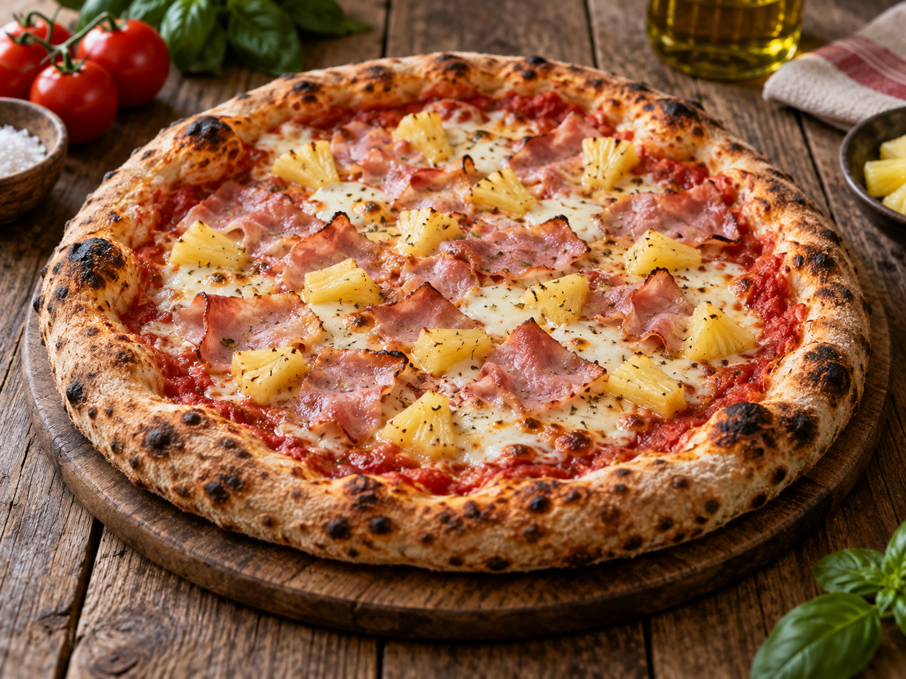
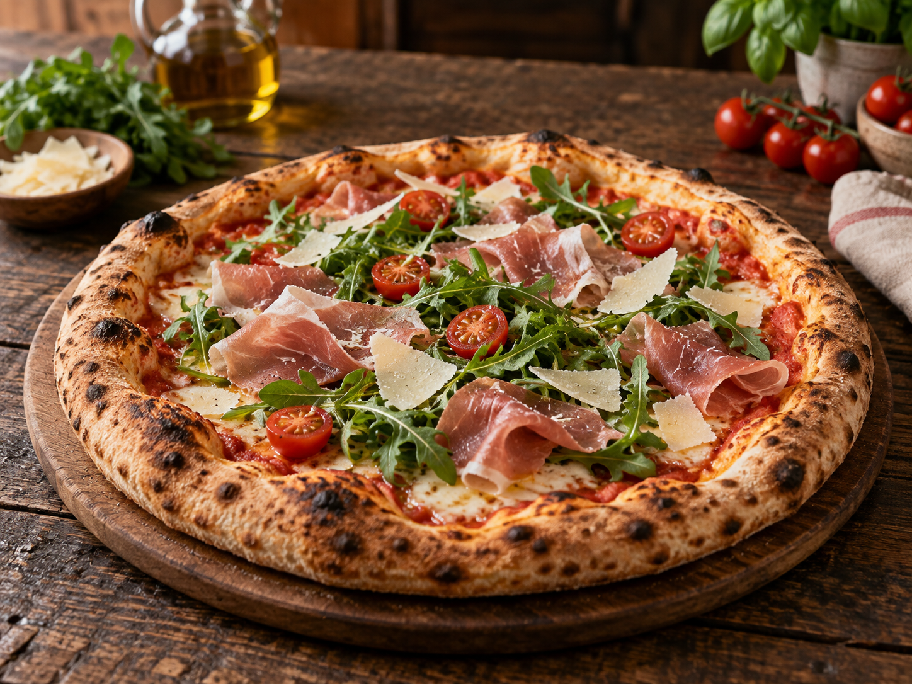
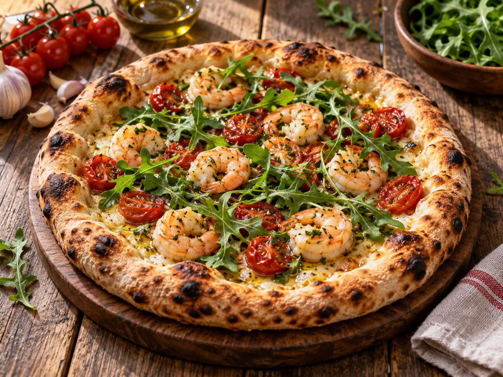
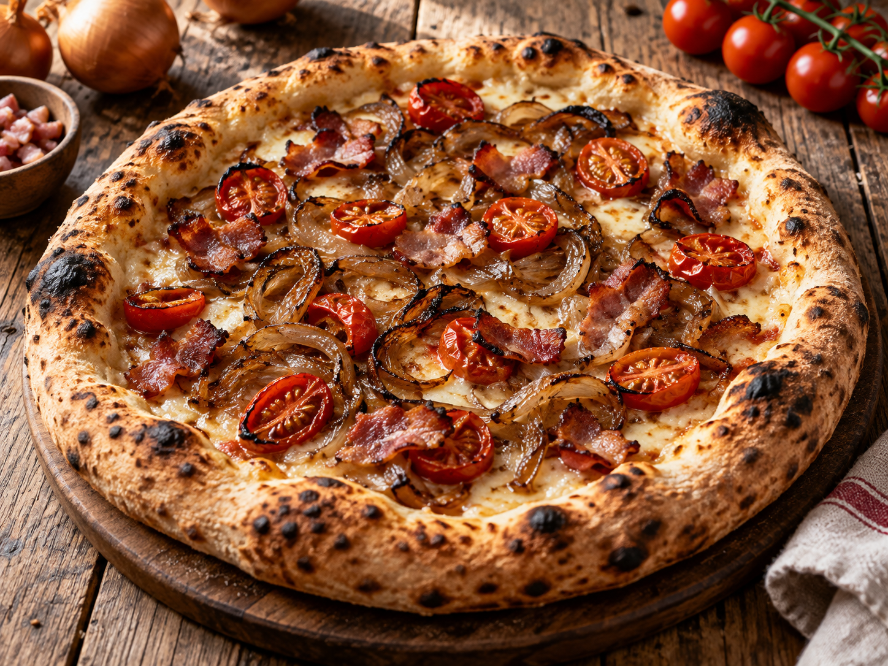
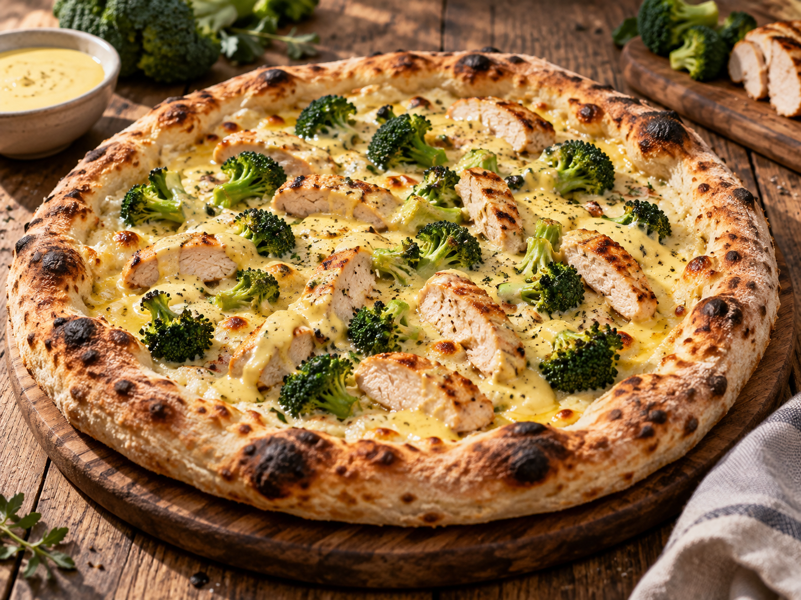

Unsere Klassiker
Neapolitanischer Pizzateig

Dieser Teig bekommt durch seine lange, kalte Reifezeit besonders viel Aroma und einen luftigen Rand. Nach dem Teig wählst du einfach eine Sauce und anschließend deinen Lieblingsbelag.
Schritt 1 · Der Teig
Zutaten
Zubereitung
- Tag 1 – Autolyse: 40 ml Wasser beiseitestellen. Mehl und die übrigen 600 ml Wasser grob vermengen, bis keine trockenen Stellen mehr zu sehen sind. Abgedeckt 30 Minuten ruhen lassen.
- Die Hefe im zurückbehaltenen Wasser auflösen und gründlich in den Teig einarbeiten. Anschließend das Salz hinzufügen und den Teig etwa 10–15 Minuten kneten, bis er glatt, elastisch und geschmeidig ist.
- Den Teig einmal dehnen und falten, zu einer Kugel formen und in eine leicht geölte, verschließbare Box legen. Etwa 24 Stunden im Kühlschrank reifen lassen.
- Tag 2 – Stückgare: Den Teig in sechs gleich große Portionen von jeweils etwa 280 g teilen. Jede Portion straff rundwirken und mit ausreichend Abstand zurück in die verschlossene Box legen. Weitere 20 Stunden im Kühlschrank reifen lassen.
- Tag 3 – Vor dem Backen: Die Teiglinge etwa vier Stunden vor dem Backen aus dem Kühlschrank nehmen und abgedeckt bei Raumtemperatur stehen lassen.
- Den Ofen mit Pizzastein oder Pizzastahl mindestens 45 Minuten auf der höchstmöglichen Temperatur vorheizen. Einen Teigling auf wenig Mehl oder Hartweizengrieß vorsichtig von innen nach außen drücken und auf etwa 28–30 cm ausziehen. Den luftigen Rand nicht platt drücken und kein Nudelholz verwenden.
- Die Pizza nach Wunsch sparsam belegen und sofort backen. Im Pizzaofen bei etwa 400–450 °C dauert das ungefähr 60–90 Sekunden; im Haushaltsbackofen bei 250–300 °C je nach Ofen etwa fünf bis acht Minuten.
Schritt 2 · Sauce auswählen
Die Basis für deine Pizza
Die Mengen reichen jeweils für etwa drei Pizzen. Für alle sechs Teiglinge bereitest du einfach die doppelte Menge zu oder kombinierst beide Saucen.

Tomatensauce
Für ca. 3 Pizzen
- 400 g geschälte Dosentomaten
- 1 TL feines Meersalz
- 1 EL Olivenöl
- Optional: 4–5 Basilikumblätter
Die Tomaten mit den Händen oder einer Gabel zerdrücken. Salz, Olivenöl und nach Wunsch Basilikum unterrühren. Die Sauce bleibt ungekocht.

Parmesancreme
Für ca. 3 Pizzen
- 200 ml Sahne
- 80 g Parmesan, fein gerieben
- 1 kleine Knoblauchzehe
- Etwas schwarzer Pfeffer
Die Sahne mit der angedrückten Knoblauchzehe sanft erwärmen. Parmesan einrühren, bis eine glatte Creme entsteht, mit Pfeffer würzen und vollständig abkühlen lassen.
Schritt 3 · Belag auswählen
Ideen für deinen Belag
Die Karten dienen als Inspiration. Belege deine Pizza einfach nach Gefühl und Geschmack – weitere Ideen können später ganz leicht dazukommen.

Margherita
- Tomatensauce
- Fior di Latte oder Mozzarella
- Frischer Basilikum
- Olivenöl
Tomatensauce und Käse sparsam verteilen. Nach dem Backen mit Basilikum und etwas Olivenöl vollenden.

Hawaii
- Tomatensauce
- Fior di Latte oder Mozzarella
- Kochschinken
- Ananasstücke
Alle Zutaten gut abtropfen lassen und locker verteilen, damit die Pizza in der Mitte nicht zu feucht wird.

Bresaola, Rucola & Cherrytomaten
- Tomatensauce oder Parmesancreme
- Fior di Latte oder Mozzarella
- Bresaola oder Parmaschinken
- Cherrytomaten
- Rucola & Parmesan
Nur Sauce und Mozzarella mitbacken. Bresaola oder Schinken, halbierte Tomaten, Rucola und Parmesan erst auf die fertige Pizza geben.

Gamberetti, Rucola & Cherrytomaten
- Garnelen
- Knoblauchöl
- Cherrytomaten
- Rucola
Garnelen und Cherrytomaten mitbacken und mit etwas Knoblauchöl verfeinern. Den Rucola erst auf die fertige Pizza geben.

Pancetta & karamellisierte Zwiebeln
- Pancetta
- Karamellisierte Zwiebeln
- Cherrytomaten
Die karamellisierten Zwiebeln zusammen mit Pancetta und halbierten Cherrytomaten locker auf der Pizza verteilen und mitbacken.

Hähnchen-Brokkoli mit Hollandaise
- Sauce Hollandaise
- Brokkoliröschen
- Hähnchenbrustfilet
- Fior di Latte, Mozzarella oder Gouda
Brokkoli kurz vorgaren und das Hähnchen vorher knapp gar braten. Beides mit Hollandaise auf der Pizza verteilen, Käse darübergeben und gemeinsam fertig backen.
Tipp
Weniger ist bei neapolitanischer Pizza mehr: Zu viel Sauce oder Belag beschwert den Teig und lässt die Mitte weich werden. Den Belag deshalb lieber sparsam verteilen.